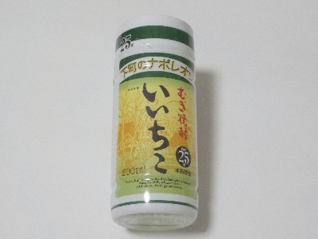

三和酒類のむぎ焼酎いいちこ
2024/08/04

下町のナポレオンは大分県産だったんですね。知りませんでした。三和酒類って社名も知りませんでした。「いいちこ」はとっても有名なのに。
ストレートで飲んでも美味しいですが、25度のせいかちょっと舌と喉に刺激がありました。私はロックが丁度良かったです。氷で冷やしても味がちゃんと残りますね。
大分県宇佐市山本2231-1
2024/08/04

下町のナポレオンは大分県産だったんですね。知りませんでした。三和酒類って社名も知りませんでした。「いいちこ」はとっても有名なのに。
ストレートで飲んでも美味しいですが、25度のせいかちょっと舌と喉に刺激がありました。私はロックが丁度良かったです。氷で冷やしても味がちゃんと残りますね。